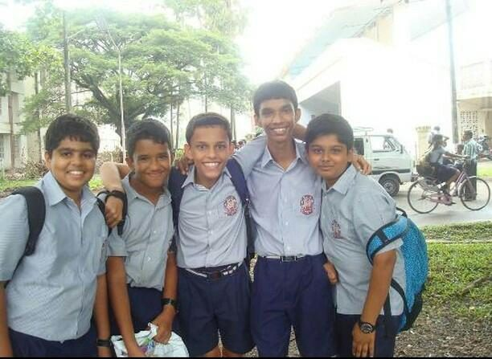

THE SEA
Longest anchorage: Goa
15.48°N 73.82°E · GOA
An Indian Navy captain's kid. Growing up meant moving with the fleet: new base, new school, new coastline, on a schedule the Navy set.
Goa was the longest stop, and the closest thing to a hometown.
No birth year, no father's name: clean-room rule. The coordinate readout stands in for the dashed track texture from v2, keeping the "before the record starts" framing without adding a chart element that needs its own explanation.
